速览
游戏发出的声音有音乐、效果音、语音等。这个音频分类讲做游戏时关于声音的种种。节奏（Tempo）是音乐中拍子打得多快的指标，常说 BPM；依游戏内容，有合适的节奏感和不合适的。归根结底这是个人趣味很大的领域，但应该意识到。BPM 是 Beats Per Minute 的缩写：例如跟着曲子拍手时，一分钟里有多少拍；一秒一拍约 BPM 60，一秒两拍约 BPM 120。《大乱斗》中为对战认真改编的舞台曲，多比 120 快一点，大约 130～170；也有 200 左右的，但那么快的可能是少数派。即使同类对战游戏，也应由攻防的速度得出合适的曲子节奏；当然同一游戏中场景变了，合适的节奏感和节律也不同。不只作曲家，大家都来思考适合游戏的节奏吧。另外，《勇者斗恶龙 1》有个机关：越往地下城深处，音乐节奏越慢。他认为非常有效，但也许实装难，其他作品里很少见。
1. 音频分类开篇 0:04
游戏发出的声音有音乐、效果音、语音等。这个分类讲做游戏时关于声音的种种。
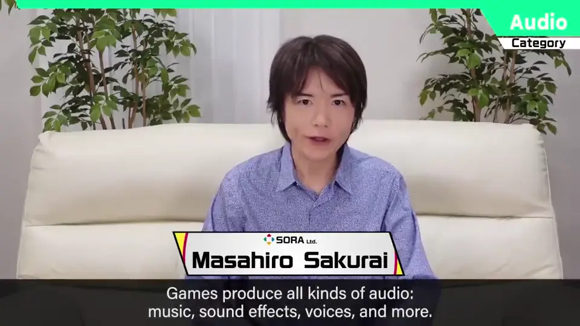
2. 什么是节奏 0:18
节奏是音乐中拍子打得多快的指标，常说 BPM。依游戏内容，有合适的节奏感和不合适的。
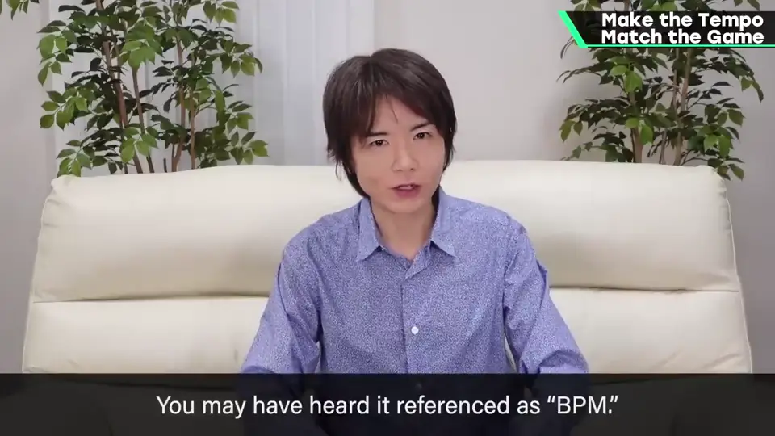
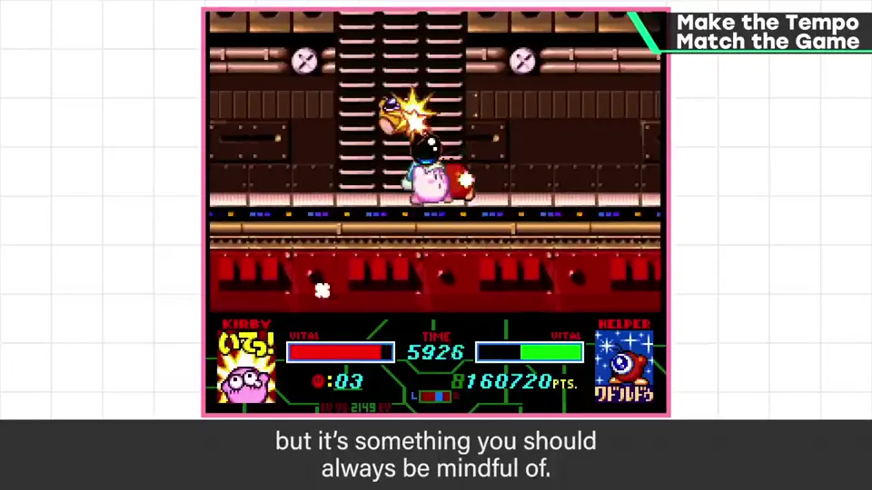
3. BPM 0:44
BPM 是 Beats Per Minute 的缩写：例如跟着曲子拍手时，一分钟里有多少拍。
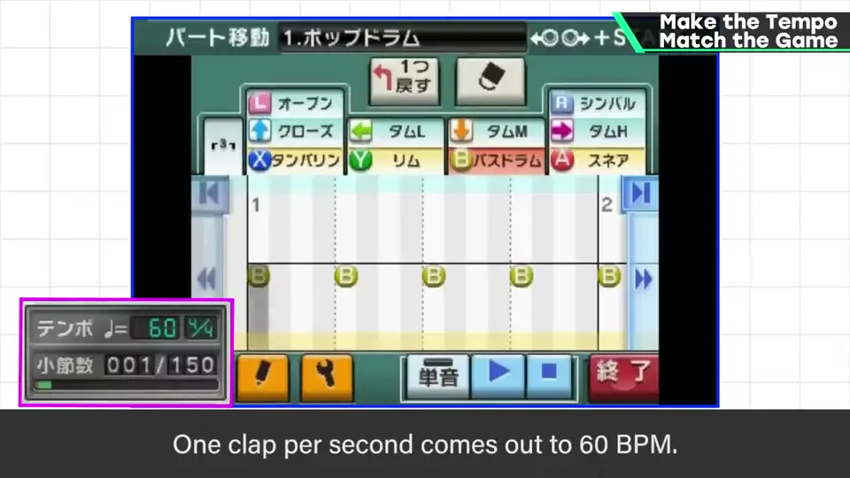
| 拍手频率 | BPM |
|---|---|
| 每秒 1 下 | 约 60 |
| 每秒 2 下 | 约 120 |
| 《大乱斗》对战曲 | 多为 130～170 |
| 极快的少数曲 | 约 200 |
4. 《大乱斗》的节奏 1:12
《大乱斗》中为对战认真改编的舞台曲，多比 120 快一点，大约 130～170；也有 200 左右的，但那么快的可能是少数派。
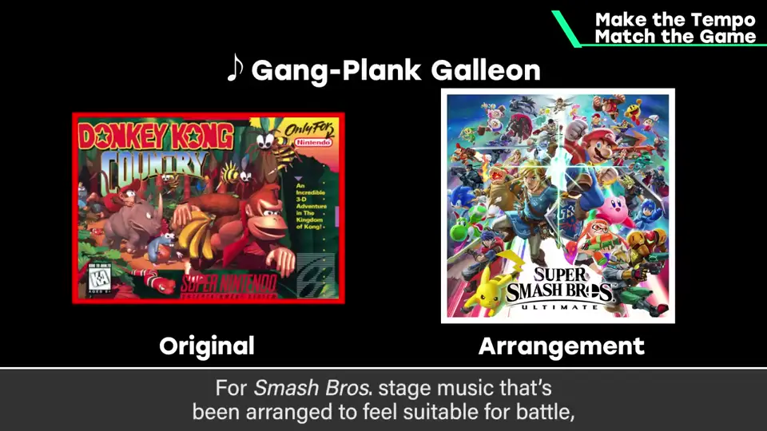
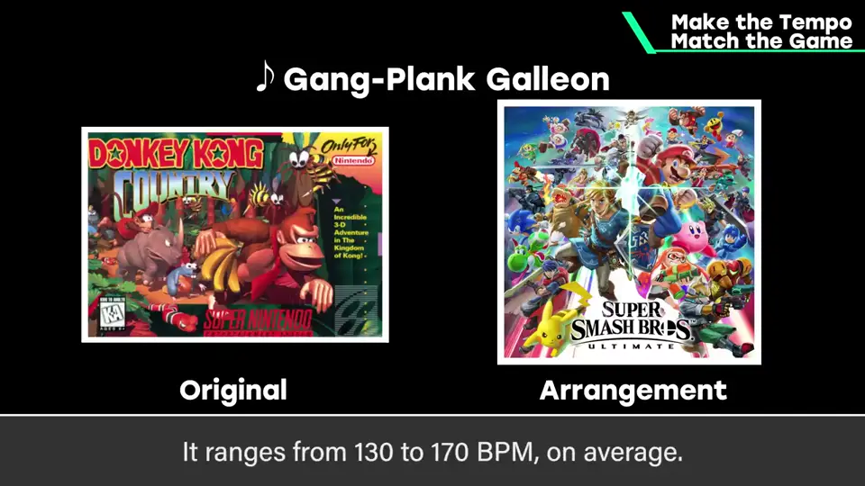
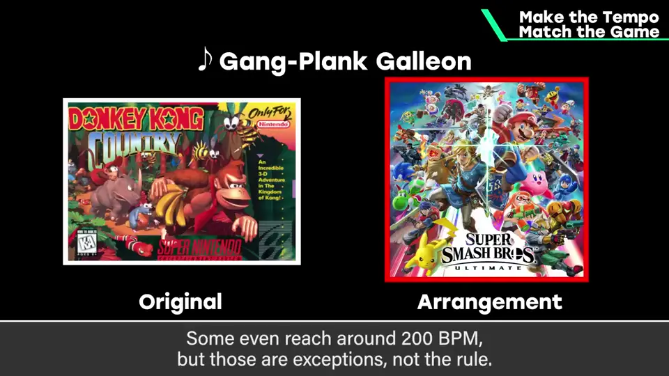
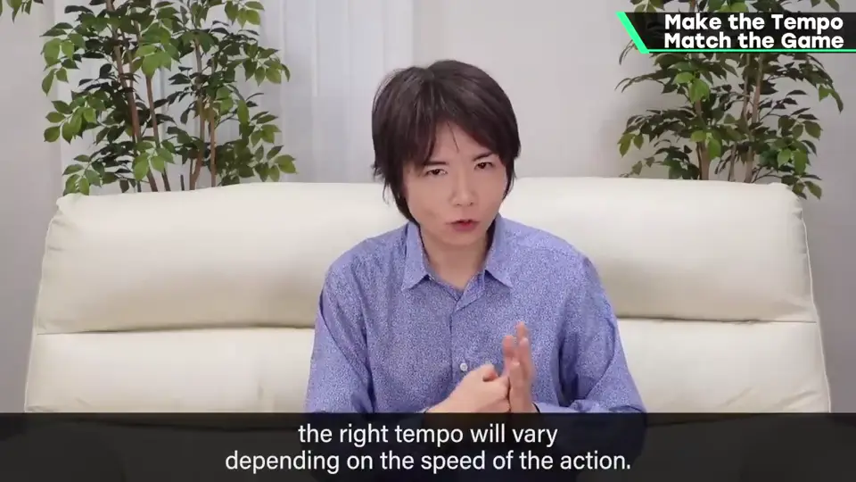
不只作曲家，大家都来思考适合游戏的节奏吧。
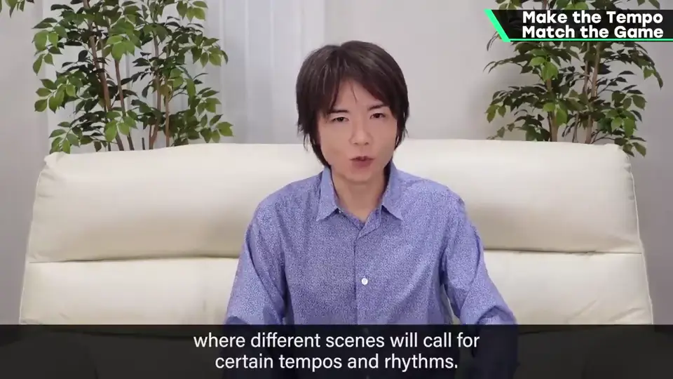
5. 《DQ1》的地下城 1:46
《勇者斗恶龙 1》有个机关：越往地下城深处，音乐节奏越慢。
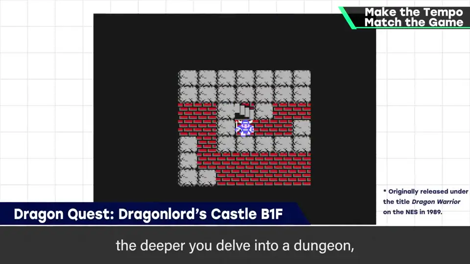
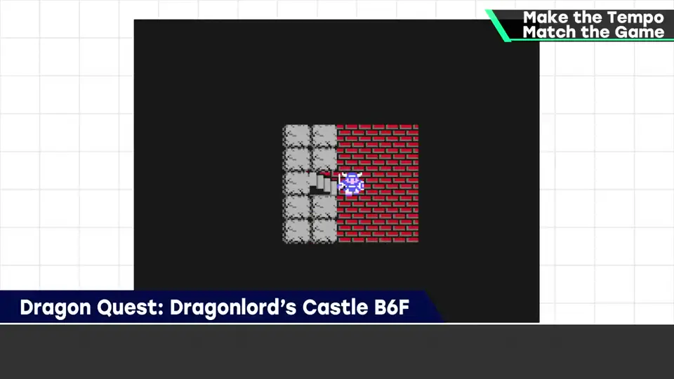
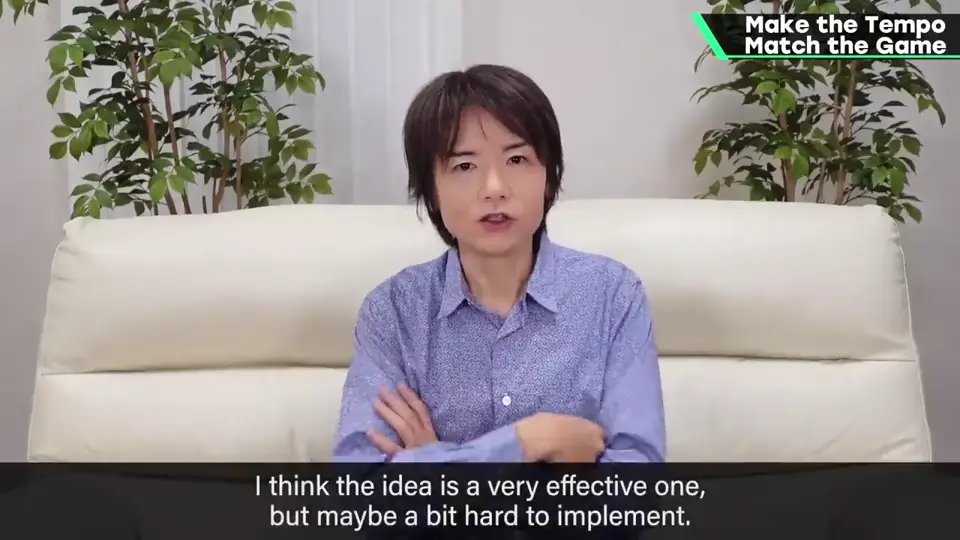
他认为非常有效，但也许实装难，其他作品里很少见。
自测题
1. BPM 60 和 120 大约对应什么？
每秒一拍约 60，每秒两拍约 120。 1:00
2. 《大乱斗》对战曲的节奏大约多少？
多为 130～170，少数约 200。 1:25
3. 《DQ1》的地下城音乐有什么机关？
越往深处，音乐节奏越慢。 2:00